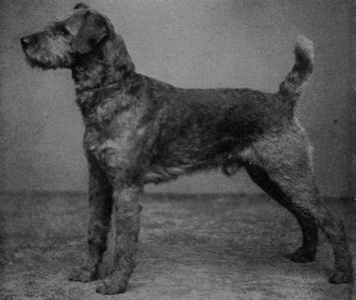
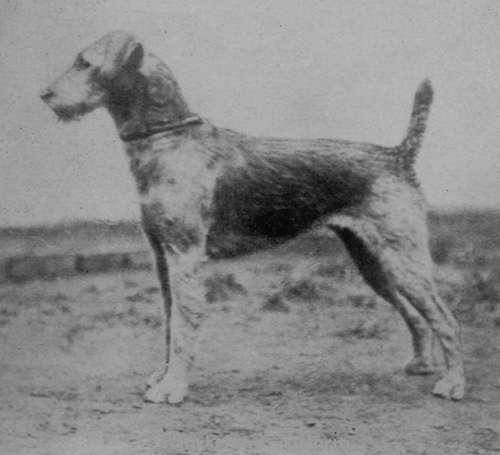

The Airedale Terrier
Description
This section is from the book "Sporting Dogs. Their Points And Management In Health, And Disease", by Frank Townend Barton. Also available from Amazon: Sporting Dogs; Their Points and Management in Health and Disease.
The Airedale Terrier
This useful variety of dog first of all appears to have sprung up in the districts of Saltaire, Bingley, Shipley Glen, Keighley, etc., in Yorkshire, and it is to the credit of Yorkshiremen for having produced a most useful variety of Terrier. Few other breeds can surpass, or even equal, the gameness, docility, and general usefulness of these rough-and-ready, companionable Terriers.
In appearance, it would hardly be correct to speak of the Airedale as being handsome, but the weird expression upon the face, and thoughtful-looking eyes offer an irresistible charm to those who are fond of a really good pal, and inexpensive forms of sport, such as ratting, etc., on river-banks, and the like used to be called Waterside Terriers.
When looking at many of the larger Airedales, one can hardly help thinking but that the breed has been produced by crossing some Terrier, e.g. Bedlington, etc., with an Otterhound. To this latter breed many inferior specimens bear a strong resemblance, in appearance, habits, and temperament.
If properly trained, an Airedale ought to take to water like a duck, be obedient to his master's call, and form an unceasing attachment towards him.
Typical specimens should have a rough or broken coat, dense and wiry, free from curl—a common fault; be of a dark grizzle on the back from top of skull to set on of tail, likewise on the sides of the body and skull.
The remaining portions of the body ought to be a rich tan, the ears being of a deeper tan than the rest.
The weight for dogs should be from about 40 to 45 lbs., and bitches 35 to 40 lbs.
colour, coat, and head are very important points, and judges of the breed lay great stress upon the "ideal" in these particulars.
Airedale Terrier Dog Crompton Marvel (Property of Leaver Brothers).
Skull should be flat, of medium width, and show no " stop " when viewed from the front; with square, long and strong jaws, bearing large and level teeth, free from decay. Nose black, and nostrils full, V-shaped ears, with Fox-Terrier carriage and small dark eyes.
Chest deep, of fair width (not wide); shoulders long, strong, and of good slope ; neck of medium length, with short, strong back, well-sprung ribs and broad, muscular loins—the last two being specially desirable. Fore-limbs well rounded, straight and strong, ending in round, thick feet.
As to the hind-quarters, these ought to be well clothed with powerfully developed muscles, the " dock" being set on high up and carried (when excited) very like that of a Fox Terrier.
The chief disqualifying points of the Airedale are: a Dudley nose, white feet, white on throat or face, and defective teeth, undershot, etc.
Many Airedale Terriers are much too big, rendering them over cumbersome for activity.
It is a variety of dog fairly easy to rear, and good specimens, during puppyhood, can be bought at prices varying from two to five guineas.
Clubs
Airedale Terrier; South of England Airedale Terrier Club.
Standard Of The Airedale Terrier. Airedale Terrier Club
Head
Long, with flat skull, not too broad between the ears and narrowing slightly to the eyes, free from wrinkle. "Stop" hardly visible, and cheeks free from fulness. Jaw deep and powerful, well filled up before the eyes, lips tight. Ears V-shaped, with a side carriage, small but not out of proportion to the size of the dog. The nose black. The eyes small, and dark in colour, not prominent, but full of Terrier expression. The teeth strong and level.
Neck
Should be of moderate length and thickness, gradually widening towards the shoulders and free from throatiness.
Shoulders And Chest
Shoulders long and sloping well into the back, shoulder blades flat. Chest deep but not broad.
Body
Back short, strong and straight. Ribs well sprung.
Hind Quarters
Strong and muscular with no droop. Hocks well let down. The tail set on high and carried gaily but not curled over the back.
Legs And Feet
Legs perfectly straight with plenty of bone. Feet small and round with a good depth of pad.
Coat
Hard and wiry and not so long as to appear ragged, it should also lie straight and close, covering the dog well all over the body and legs.
Barkerend Victoria. Airedale Terrier Dog.
Colour
The head and ears, with the exception of dark markings on each side of the skull, should be tan, the ears being of a darker shade than the rest. The legs up to the thighs and elbows being also tan. The body black or dark grizzle.
Size
Dogs 40 lbs. to 45 lbs. weight. Bitches slightly less.
That as it is the unanimous opinion of the Airedale Terrier Club that the size of the Airedale Terrier as given in the above Standard is one of if not the most important characteristics of the breed, all Judges who shall henceforth adjudicate on the merits of the Airedale Terrier shall consider undersized specimens of the breed severely handicapped when competing with dogs of the standard weight. And that any of the Club's Judges who, in the opinion of the Committee, shall give Prizes or otherwise push to the front dogs of a small type, shall at once be struck off from the list of Specialist Judges.
Rules And Regulations
1. The Club shall be called "The Airedale Terrier Club".
2. The objects of the Club shall be to advance and protect the interests of the Airedale Terrier, and to improve the breed.
3. The Club shall consist of a President, four Vice-Presidents, a Committee, Honorary Treasurer and Secretary, and an unlimited number of Members.
4. The President, Vice-Presidents, Committee, and Honorary Treasurer and Secretary, shall be elected annually at the first General Annual Meeting of the Club.
5. The first General Annual Meeting of the Club shall be held at the Liverpool Dog Show, and any other General Meetings shall be held at such places and times as the Committee shall think desirable.
6. Any respectable person favourable to the objects of the Club shall be eligible for admission as a Member. Such person shall be proposed by one Member of the Club and seconded by another Member, and the election shall take place at any General Meeting of the Club. Two black balls shall exclude from Membership.
7. There shall be an Entrance Fee of 10s., and an Annual Subscription of 10s. for each Member, due on the 1st day of January in each year.
8. No one shall be deemed a Member of the Club or entitled to the privileges of Membership, until the Annual Subscription and Entrance Fee are paid.
9. The question of giving Prizes of Cups at Shows shall be decided by any General Meeting, or by the Committee, or by a Sub-Committee to be appointed for that purpose, who shall satisfy themselves as to the Classes and Prizes, and Judges.
10. The President, Vice-Presidents, and Committee of the Club shall be ex-officio Judges at any show where the Club's Prizes or Cups are given for competition.
11. All expenses incurred on behalf of the Club shall be defrayed out of the funds of the Club.
12. The voting at all Meetings shall be by show of hands, unless otherwise determined by such Meetings.
13. In the absence of the President, or Vice-Presidents, at any Meeting, the Members present shall elect a Chairman for the purposes of such Meeting.
14. Any Member can withdraw from the Club on giving notice in writing to the Secretary, provided always that such Member shall be liable for his subscription for the current year in which such notice is given.
15. Notices of all Meetings to be held, and Reports of such meetings, may be sent to the Stock-Keeper, Our Dogs, and other Fanciers' Publications, or as may be determined by the Committee.
16. Any Rules or Regulations of the Club shall only be made, altered, or amended, at the First General Annual Meeting of the Club, and such Rules, Regulations, Alterations or Amendments, shall only be made on notice given by any Member to the Secretary at least ten days previous to such Meeting.
Continue to: